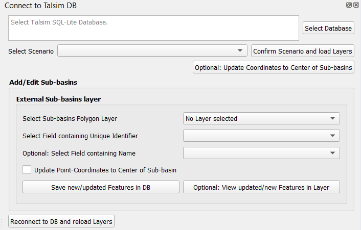
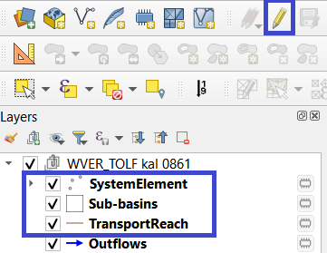

Connect to Talsim DB¶
The second functionality of QTalsim allows users to connect to a Talsim Database, load system elements, and sub-basins. Moreover, users can edit existing sub-basins and import new sub-basins from an external polygon layer.

Connect to Talsim DB¶
The next step requires selecting a scenario from the list and confirming this scenario by clicking “Confirm Scenario and load Layers”. As a result, the System Elements, Outflows and Sub-basins are added to a layer group (named after the scenario) in the active QGIS-Project. The SystemElements-layer contains all system elements, located based on longitude and latitude attributes. The outflows depict the corresponding lines between the system elements. These two layers cannot be edited, and edits are not saved to the DB.
At any stage, you can click the “Reconnect to DB and Reload Layers” button at the bottom to reconnect to the database, e.g., if you wish to inspect changes.
Edit features of Talsim DB¶
Additionally, inserting new sub-basins is possible by simply adding new polygons while in editing mode. When confirming the geometry of the new sub-basin, you must insert values into the fields ‘ElementIdentifier’ and optionally into the field ‘Name’. The fields ‘Latitude’ and ‘Longitude’ are automatically filled with the coordinates of the sub-basin’s center. The fields ‘ElementType’ and ‘ElementTypeCharacter’ are also automatically filled with the respective values for sub-basins. However, please note that any other fields are not filled by the plugin and must be manually inserted into the database.

Once you have finished editing existing polygons and/or inserting all new sub-basins, it is important to save the edits and end the editing session by clicking the ‘Toggle Editing’ button again. As a result, newly added features are inserted into the database, and the edited geometries of existing sub-basins are updated in the database. A log message (QTalsim-log) provides details of all updated/inserted features.
Another feature provided is the option to update the coordinates of sub-basins to the center of the sub-basins (button “Optional: Update Coordinates to Center of Sub-basins”). Clicking this button calculates the centroid of all sub-basins, and updates all coordinates (columns ‘Latitude’ and ‘Longitude’) with the centroid’s coordinates.
External Sub-basins Layer¶
An additional feature allows for adding an external polygon layer to include sub-basin geometries into existing sub-basins or to add new sub-basins to the database. First, you must select a polygon layer from the list. This layer must contain a Unique Identifier field with the ‘ElementTypeCharacter’ and the ‘ElementIdentifier’ (e.g., AA001). Select this field from the list, and you can optionally also select a field containing the name of the sub-basin. When selecting a name-field the content is added to the feature’s ‘Name’-field in the DB. When selecting a name field, the content is added to the feature’s ‘Name’ field in the database. If you are updating existing features, you can update the point coordinates by selecting the corresponding checkbox.
By clicking ‘Save New/Updated Features in DB,’ all new features or features with updated geometry are saved in the database. By clicking ‘Optional: View updated/new Features in Layer’ a new layer with the updated/inserted features is added to the layer group. Again, the information about the updated/inserted features is logged to the QTalsim-log.